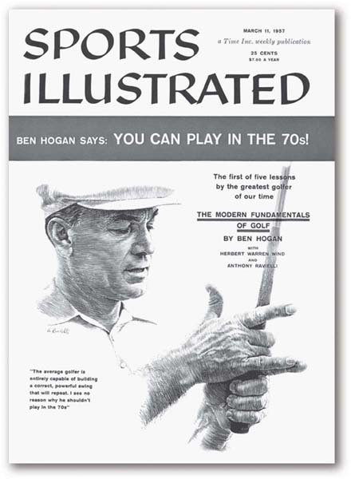

We have used the phrase “breakdown” value several times so far. The term breaking down has become a common phrase in the English language in reference to dividing some whole up into component parts. In sports, one of the most impressive feats in the history of breaking down complexity is Ben Hogan’s classic Five Lessons: The Modern Fundamentals of Golf.Hogan (1957). Mr. Hogan is one of the greatest champions in the history of the game, with 64 PGA tour wins between 1938 and 1959. These included nine major tournament titles, six of which came after a horrific 1949 accident in which the car he was driving collided head on with a Greyhound bus. In Five Lessons, he provides the first in-depth accounting of the golf swing broken down into four core elements: the grip, stance and posture, first part of the swing (backswing), and the second part of the swing (downswing). This paperback has itself turned into a modern classic, still in print (available on Amazon!) and responsible for the swings of some of the most accomplished players today, including Tiger Woods.
Those inexperienced with golf often wonder how this seemingly simple game can be worthy of such devotion and study. They are incredulous to learn, for example, that Mr. Hogan’s book has an entire chapter on the grip—that is, simply how to hold the club! Figure 6.1 "Ben Hogan on the Cover of Sports Illustrated" shows the striking ink drawings by Anthony Ravielli on the cover of Sports Illustrated, perfect in detail as Mr. Hogan demanded. Hogan’s devotion to studying different approaches to gripping the club has him describing grip aesthetics in words rich with emotion: “For myself and other serious golfers there is an undeniable beauty in the way a fine player sets his hands on the club.” Such admiration and attention to subtle nuance is the result of deep study, and it leads to explanations of the grip of such a technical nature as to leave any but the most dedicated student of golf scratching heads:
Figure 6.1 Ben Hogan on the Cover of Sports Illustrated
When a golfer has completed his left-hand grip, the V formed by the thumb and forefinger should point to his right eye. The total pressure of all the fingers should not be any stronger (and may even be a little less strong) than the pressure exerted by just the forefinger and the palm pad in the preparatory guiding action. In the completed I grip, the main pressure points are the last three fingers, with the forefinger and the palm pad adding assisting pressure. (Hogan, 1957)
Yet Mr. Hogan is also clear in identifying the important outcomes of developing this understanding, which ultimately connects the grip with other parts of the swing:
Keeping pressure on the shaft with the palm pad does three things: it strengthens the left arm throughout the swing; at the top of the backswing, the pressure from this pad prevents the club from slipping from the player’s grasp; and it acts as a firm reinforcement at impact. (Hogan, 1957)
The grip elements represent one piece of the puzzle. But Mr. Hogan has a deep, almost stunning insight about the outcome of grounding your golf swing in solid fundamentals throughout. Ultimately, careful attention to the grip helps in executing other fundamental elements of the swing and also dramatically improves the golfer’s ability to compete:
Frequently, you know, what looks like a fairly good golf swing falls apart in competition…the harsh light of competition reveals that a swing is only superficially correct…It can’t stand up day after day. A correct swing will. In fact, the greater the pressure you put on it, the better your swing should function, if it is honestly sound. (Hogan, 1957)
While we would overly flatter ourselves to suggest that we could replicate the level of depth and expertise in Mr. Hogan’s work on the golf swing in the study of growth strategy, our intent is the same. The 3-Circle model is about creating honestly sound strategy that will hold up under competition. We do that by breaking down value, seeking to deeply understand the component parts and how to work with them and then assembling them back together in an integrative strategy. The primary insight is that each individual category of value can spawn unique ideas for growth through building the firm’s ability to produce and communicate value that really matters to customers. This is what we will be breaking down in this chapter.